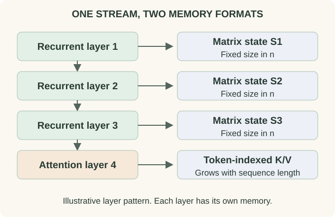

Hybrid Attention: Combine Retrieval with Recurrent Memory
Two ways of remembering a document
Imagine processing a long set of meeting notes. A recurrent state can repeatedly update a compact representation of the current project, unresolved questions, and recent changes. An attention layer can compare a new query against individually stored token representations. These are illustrative uses, not guaranteed specializations of trained layers.
The structural difference is precise. In a fixed-state recurrence, earlier tokens affect future computation through a bounded collection of numbers. In full attention, every earlier position can retain its own K/V entry. More tokens increase full-attention memory, while they increasingly compete to be represented in a fixed recurrent state.
Follow one token through a mixed stack
Let $R_\ell$ denote a recurrent mixer and $A_\ell$ an attention mixer, each embedded in its own residual block with normalization and an MLP. An illustrative four-layer pattern is $R_1,R_2,R_3,A_4$. At token $t$, the first layer updates its state using the token embedding; the next recurrent layer receives that layer's output, not the original embedding.
At layer 4, keys and values are projections of representations already contextualized by three recurrent layers. Thus attention is reading a sequence of learned prefix summaries attached to positions. Higher recurrent layers, in turn, can process representations that have already retrieved information with attention. The branches communicate through depth even when their internal memory formats differ.

{kind=link}
Write the budget as a sum
Suppose $L_R$ recurrent layers each maintain $H_R$ matrices of size $d_k\times d_v$, and $L_A$ attention layers each keep $H_{KV}$ keys and values with width $d_h$. For batch size $B$, sequence length $n$, and $b$ bytes per stored scalar, a simplified persistent-state budget is
This leaves out short convolution buffers, recurrent normalizers where present, position metadata, and padding. Add those for a real implementation. Different state precisions require different byte factors.
For an illustrative 32-layer model with 24 recurrent layers, 8 GQA layers, $H_R=16$, $d_k=d_v=128$, $H_{KV}=8$, $d_h=128$, $B=1$, and $b=2$, recurrent matrices occupy 12 MiB. At $n=8192$, the attention cache occupies 256 MiB. A 32-layer stack using the same GQA at every layer would need 1 GiB of KV state. This is a state-accounting example, not a measured model quality or speed comparison.
A hybrid is not asymptotically linear if full attention remains
At fixed width, recurrent prefill costs grow linearly with $n$ while each global-attention layer retains quadratic attention arithmetic. A fixed nonzero number of full-attention layers therefore keeps an $O(n^2)$ term in the stack's prefill cost. Reducing its coefficient can still be valuable. During one-token decode, the recurrent state update is independent of prefix length, while each global-attention layer still reads a growing cache.
Layer placement affects representation and execution. Putting all attention layers at the bottom differs from interleaving them: upper recurrent layers then receive different kinds of context. A layer ratio is not a complete architectural specification. The residual arrangement, state update, positional scheme, head dimensions, and MLP also matter.
What does “interleaved attention” mean?
Authors may interleave local and global attention layers, recurrent and attention layers, or computation across devices. These are different operations. “IHA” is not a universally defined fourth head-sharing scheme alongside MHA, MQA, and GQA. State the actual pattern instead of inferring an algorithm from that abbreviation.
A local/global stack retains token caches but varies which positions are reachable. A recurrent/global stack changes the form of memory in some layers. A head-level mixture applies different mixers within one layer and needs an explicit rule for combining outputs. The same word “hybrid” can describe all three.
Probe the reason for the mixture
Evaluate both language modeling and tasks that stress the memory design: retrieving an exact value far back in a document, following repeated updates to the same entity, and handling many competing associations. Vary both the distance and number of distractors. A single successful retrieval example says little about capacity.
Measure prefill, decode, state bytes, and batch size separately. A hybrid can reduce persistent memory enough to admit a larger batch, improving throughput even if single-request latency changes little. Conversely, an unoptimized recurrent kernel can lose the theoretical benefit.
Try it: If one full-attention layer remains and all other layers are recurrent, is prefill linear in sequence length?
No. That attention layer still contributes a quadratic term. The coefficient can be much smaller than in an all-attention stack, but the asymptotic classification is still quadratic at fixed architecture.
A concrete hybrid
The Kimi Linear paper provides a concrete KDA/MLA hybrid. Read KDA and MLA separately, then use the Kimi K3 case study to inspect an actual layer schedule and configuration.